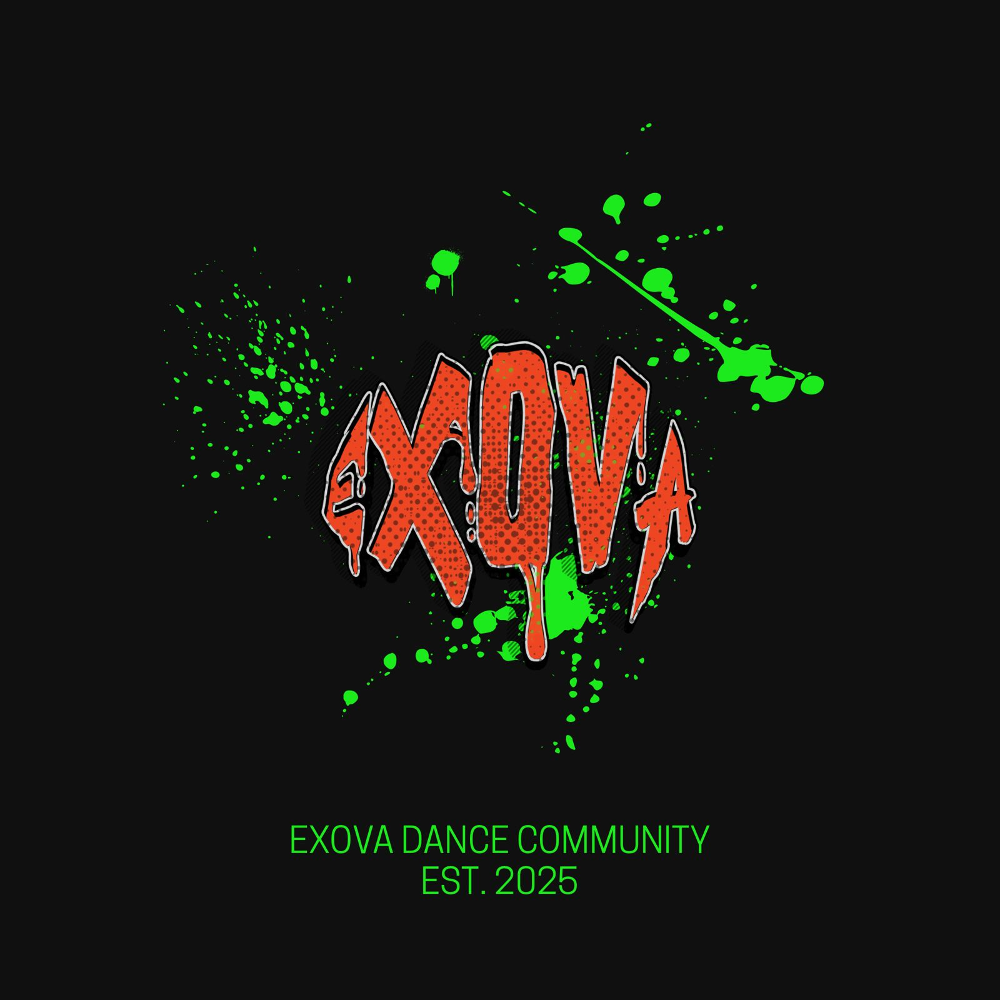

ki, makasi banyak yaa udah jadi bagian dari exova dari awal banget sampe sejauh ini. makasi udah bertahan, udah mau ngajarin, ngebimbing, dan nge-push kita pelan-pelan biar bisa berkembang bareng. enam bulan bukan waktu yang sebentar, dan gua bener-bener berterima kasih buat semua perjuangan yang udah elu kasih ke exova. semoga performance pertama dan terakhir kita bareng bisa jadi kenangan sekaligus penampilan terbaik yang pernah kita kasih. sukses terus ya ki, semoga kehidupan elu di luar bogor bisa jauh lebih baik dari sebelumnya. dan inget, seberapa jauh pun langkah elu nanti, exova bakal tetep jadi rumah kalian.
ciel, makasi yaa udah mau ngebimbing anak-anak exova dari awal sampe akhir. makasi juga karena selalu nemenin gua di setiap rangkaian perjalanan ini. elu jadi salah satu sosok yang punya peran besar buat exova dan banyak ngasih hal baik buat kita semua. setelah ini, terus kejar mimpi-mimpi elu ya. jangan gampang patah, jangan gampang goyah, dan percaya kalau semua impian yang selama ini elu perjuangin bakal bisa tercapai. inget ciel, pintu exova bakal selalu terbuka dan exova bakal tetep jadi rumah kalian.
angels, makasi banyak yaa udah mau gabung di exova dan jadi bagian dari EXHEART. makasi juga karena udah nyempetin waktu di tengah kesibukan kuliah yang pasti ga gampang buat dijalanin. gua seneng banget bisa kenal dan jalan bareng sama elu di sini. semoga setelah graduate nanti semua yang elu cita-citain bisa tercapai satu per satu. sukses terus yaa, dan jangan pernah berhenti ngejar apa yang elu mau. inget angels, exova bakal tetep jadi rumah kalian.
nab, makasi yaa buat semuanya. ini mungkin jadi awal perjalanan baru elu di luar sana, dan gua yakin elu bisa nunjukkin kemampuan terbaik elu di mana pun nanti. makasi udah selalu ngasih yang terbaik buat exova dan udah nemenin anak-anak exova sampai di titik terakhir ini. kejar terus semua impian elu dan jadi pribadi hebat seperti yang selama ini gua kenal. semoga semua jalan yang elu pilih membawa banyak hal baik ke depannya. dan inget nab, exova bakal tetep jadi rumah kalian.
ti, makasi yaa udah mau masuk dan jadi bagian dari exova di tengah masa-masa elu yang sibuk. makasi juga karena masih nyempetin tenaga dan waktu buat ikut latihan bahkan setelah pulang kerja. itu bukan hal yang gampang dan gua bener-bener menghargai semua usaha yang udah elu kasih. semoga setelah ini semua yang elu pengen bisa tercapai dan semua perjuangan elu dibayar dengan hasil yang terbaik. inget ti, exova bakal tetep jadi rumah kalian.
clara, makasii banyak yaa udah mau gabung EXHEART bahkan di waktu yang mepet banget, cuma h-5 sebelum performance. makasi juga karena udah mau bantu dan berusaha bareng kita sampai akhirnya bisa berdiri di panggung ini. walaupun waktunya singkat, kehadiran elu tetap jadi bagian penting dari perjalanan kita. semoga setelah ini semua hal yang elu pengenin bisa tercapai satu per satu. sukses terus ya clara, dan inget exova bakal tetep jadi rumah kalian.
farel, makasi yaa udah jadi bagian dari perjalanan ini. semangat terus buat langkah-langkah elu ke depannya. semoga semua jalan yang elu pilih dan semua keputusan yang elu ambil bisa jadi jalan terbaik buat masa depan elu. jangan takut buat terus berkembang dan nyoba hal-hal baru. gua yakin masih banyak hal baik yang nunggu elu di depan sana. sukses terus ya rel, dan inget, sejauh apa pun elu melangkah nanti, exova bakal tetep jadi rumah kalian.